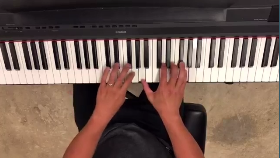
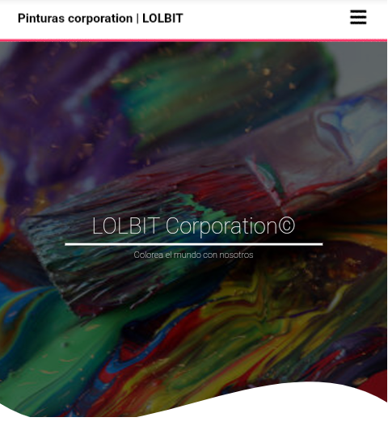
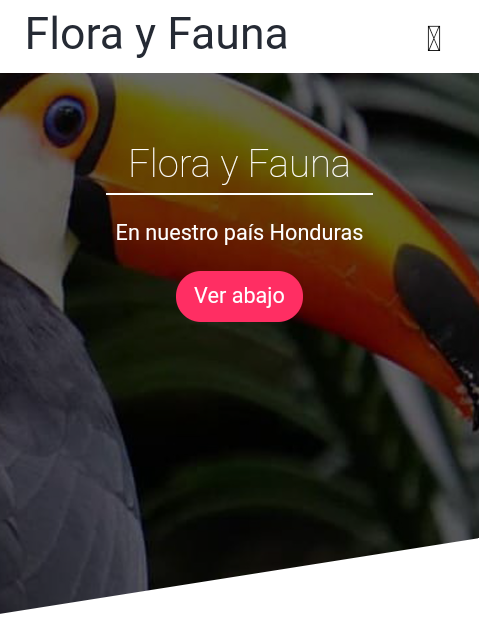

Creador...
Por Jocsan M. Martinez
Mi correo para consultas o sugerencias :) ->jocsanex5@gmail.com
Video pag de Inicio
Visita este canal, encontraras buen contenido para aprender mas sobre el piano.
Deseas Aprender sobre pinturas y colores?
En esta paginas encontraras informacion que te sera util en el mundo del arte.
Flora y Fauna de Honduras
Contenido exclusivo para que aprendas sobre la flora y la Fauna de nuestro bello pais Honduras.